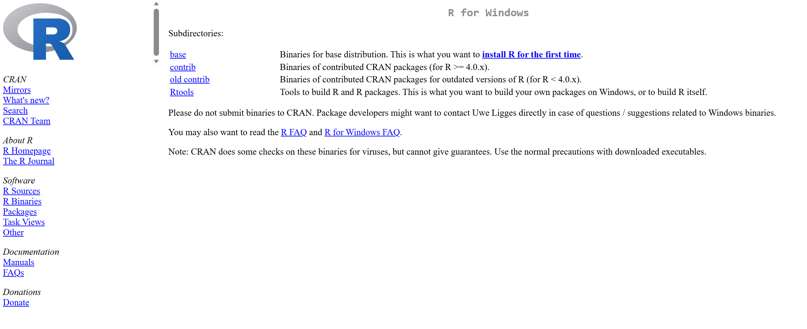
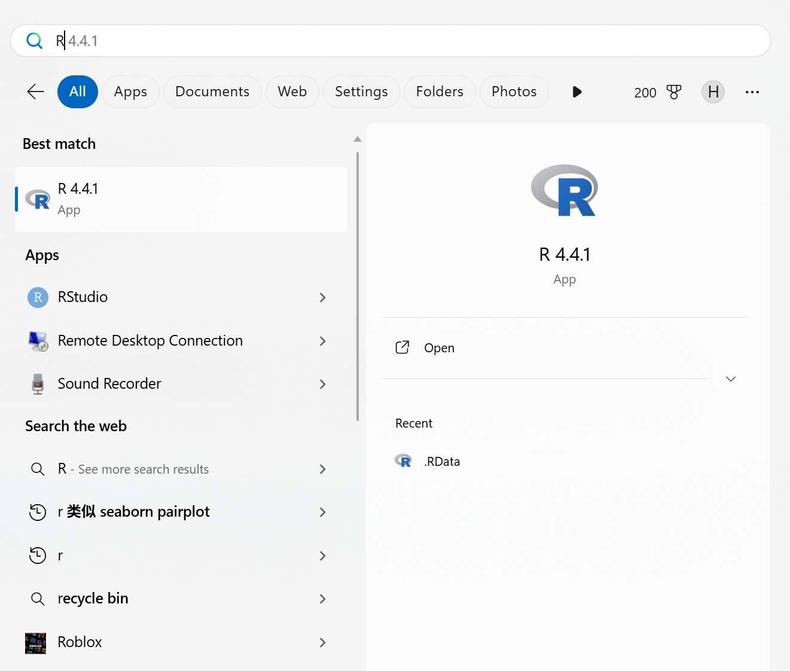
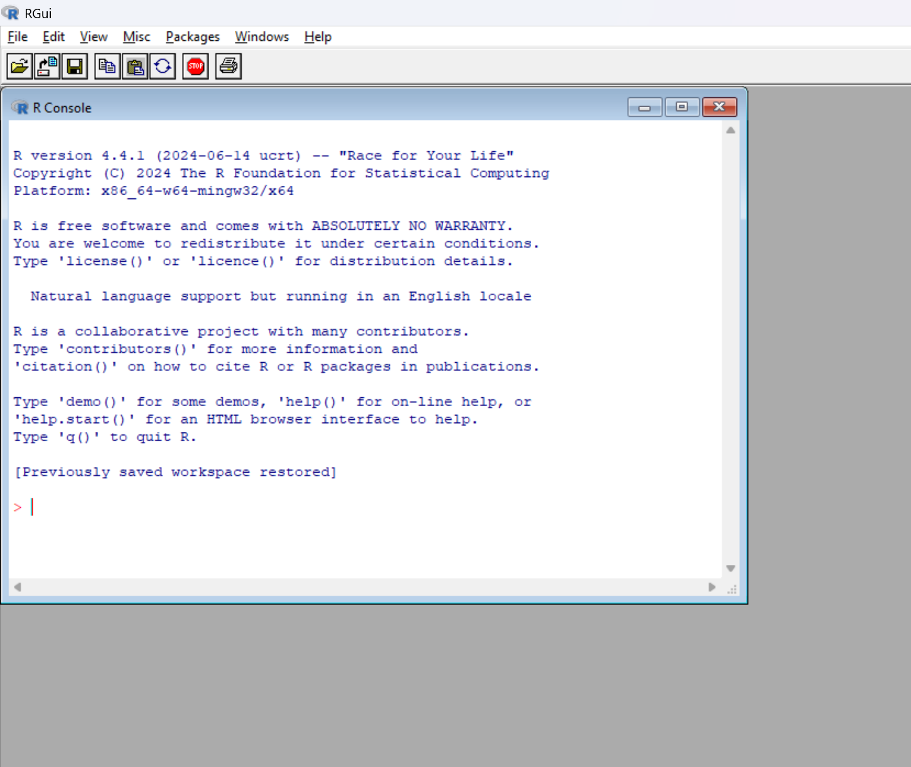
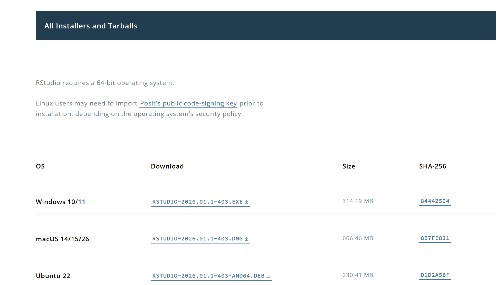
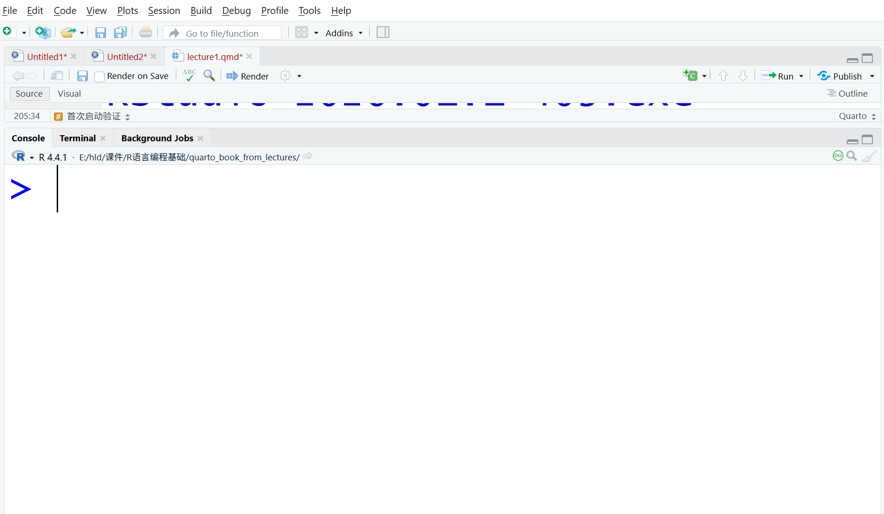
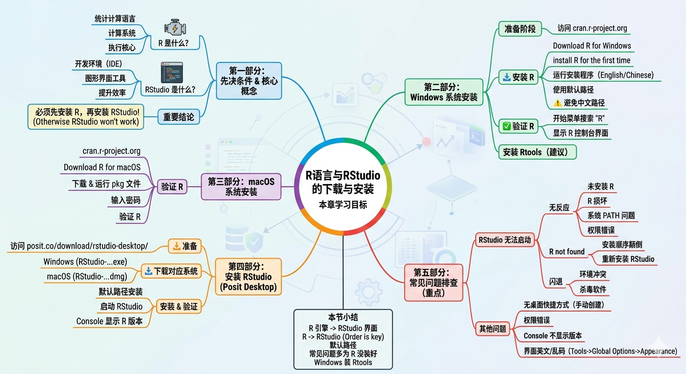

2 R与RStudio的下载与安装
2.1 本章学习目标
完成本章后，你将能够：
- 正确理解 R 与 RStudio 的区别
- 从官方网站下载 R
- 正确安装 R
- 下载并安装 RStudio（Posit Desktop）
- 在 Windows 系统上安装 Rtools
- 解决常见安装问题
2.2 R 与 RStudio 的关系（必须先理解）
在开始安装之前，必须澄清一个核心概念。
2.2.1 R 是什么？
R 是：
- 一种统计计算语言
- 一个完整的计算系统
- 真正执行代码的“核心引擎”
R 负责进行所有的数据计算与统计分析。
2.2.2 RStudio 是什么？
RStudio（现称 Posit Desktop）是：
- 一个开发环境（IDE）
- 一个图形界面工具
- 帮助我们更方便编写与运行 R 代码
2.2.3 重要结论
必须先安装 R，再安装 RStudio。
如果没有安装 R，RStudio 将无法运行。
2.3 Windows 系统安装 R（详细步骤）
2.3.1 进入官方网站
打开浏览器访问：https://cran.r-project.org

2.3.2 选择系统版本
点击：
👉 Download R for Windows
2.3.3 进入 Windows 下载页面
点击：
👉 install R for the first time

2.3.4 下载最新版 R
点击：
👉 Download R-4.5.2 for Windows (87 megabytes, 64 bit)(2026-3-2)
2.3.5 开始安装
双击下载的安装程序。
安装过程中注意：
- 语言选择：English 或 Chinese 均可
- 安装路径：建议使用默认路径
建议路径：
⚠ 不建议：
- 安装在中文路径
- 安装在 OneDrive 同步目录
2.3.6 组件选择
保持默认勾选即可。
如出现：
“Add R to system PATH”
建议勾选。
2.3.7 安装完成验证
安装完成后：
- 打开开始菜单
- 运行 “R”

若出现控制台界面（图2.4），说明安装成功。

2.4 macOS 安装 R
2.4.1 进入 CRAN
点击：
👉 Download R for macOS
2.4.2 下载 pkg 文件
下载最新版 .pkg 文件。
2.4.3 双击安装
- 按提示安装
- 输入管理员密码
- 使用默认路径
2.4.4 安装 RStudio（Posit Desktop）
2.4.5 进入官网
在浏览器中访问：https://posit.co/download/rstudio-desktop/
该页面为 RStudio（现称 Posit Desktop）的官方下载页面（图2.5）。

2.4.6 选择版本
在页面中选择：
- Windows 10/11 RStudio-2026.01.1-403.exe
- macOS 14/15/26 RStudio-2026.01.1-403.dmg
2.4.7 下载对应系统版本
根据你的操作系统选择下载：
- Windows
- macOS
下载完成后会得到对应的安装文件（.exe 或 .dmg）。
2.4.8 安装步骤
双击下载的安装文件，按照提示完成安装。
建议：
- 保持默认安装路径
- 不需要修改高级设置
- 直接点击 “Next” 直到完成
2.4.9 首次启动验证
安装完成后启动 RStudio。
在左上角的 Console（控制台） 窗口中，如果显示类似图2.6：

2.5 常见错误与问题排查（重点）
2.5.1 RStudio 无法启动（最常见问题）
2.5.1.1 情况 1：双击无反应
可能原因：
- 未安装 R
- R 安装损坏
- 系统 PATH 未正确设置
- 权限问题
解决方法：
- 确认是否已成功安装 R
在开始菜单搜索 “R x64” 是否可以正常打开。 - 若 R 无法打开，请重新安装 R。
- 右键 RStudio → “以管理员身份运行” 尝试启动。
- 若仍失败，卸载 RStudio 后重新安装。
2.5.1.2 情况 2：提示 “R not found”
原因：
- 先安装了 RStudio，后安装 R
- R 安装路径异常
解决：
- 卸载 RStudio
- 确认 R 可正常运行
- 重新安装 RStudio
2.5.1.3 情况 3：启动后闪退
可能原因：
- 系统环境冲突
- 杀毒软件拦截
- 安装在中文路径或特殊目录
解决建议：
- 卸载并重新安装
- 使用默认路径安装
- 关闭杀毒软件后测试
2.5.2 安装后没有桌面快捷方式
这是 Windows 用户常见问题。
2.5.2.1 解决方法：
- 打开：
C:Files
或
C:Files
- 找到：
rstudio.exe
- 右键 → “发送到” → “桌面快捷方式”
2.5.3 点击图标提示权限错误
解决：
- 右键图标 → 属性
- 取消“以管理员身份运行”勾选
- 或改为始终以管理员运行（若权限限制）
2.5.4 RStudio 打开但 Console 不显示 R 版本
说明 RStudio 没有找到 R。
检查：
- R 是否安装在默认路径：
C:Files
- 是否安装 64 位版本
- 是否重启过电脑
2.5.5 安装后界面是英文或乱码
可在 RStudio 中设置：
Tools → Global Options → Appearance
修改：
- 字体（建议使用 Consolas / JetBrains Mono）
- 编码（UTF-8）
2.6 本章小结
- 必须先安装 R，再安装 RStudio
- RStudio 无法启动通常是 R 未正确安装
- 建议使用默认安装路径
- 若无桌面图标，可手动创建快捷方式
- Windows 用户建议安装 Rtools
